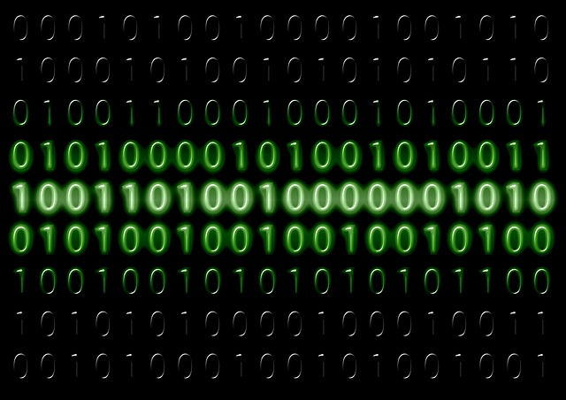

Het binaire stelsel is een telsysteem dat maar twee cijfers gebruikt: 0 en 1. Computers werken hiermee, omdat een elektronisch schakeltje maar twee standen kent: aan (1) of uit (0). Bij ons normale (decimale) telsysteem gebruiken we tien cijfers, van 0 tot en met 9, en heeft elk cijfer een plaats met een waarde van 1, 10, 100, enzovoort. Bij het binaire stelsel werkt dat net zo, maar dan met machten van 2: elke plek staat voor 1, 2, 4, 8, 16, enzovoort. Zo betekent het getal 1011 in binair: 1×8 + 0×4 + 1×2 + 1×1, wat samen 11 is in het gewone (decimale) stelsel. Elke losse 0 of 1 in een binair getal heet een bit, de kleinste eenheid van informatie in een computer. Acht bits samen vormen een byte, waarmee bijvoorbeeld één letter of teken kan worden opgeslagen. Alles wat een computer doet — tekst, afbeeldingen, geluid — wordt uiteindelijk omgezet naar reeksen van enen en nullen. Door dit om te zetten (converteren) tussen decimaal en binair kun je precies zien hoe een computer een getal "ziet".
